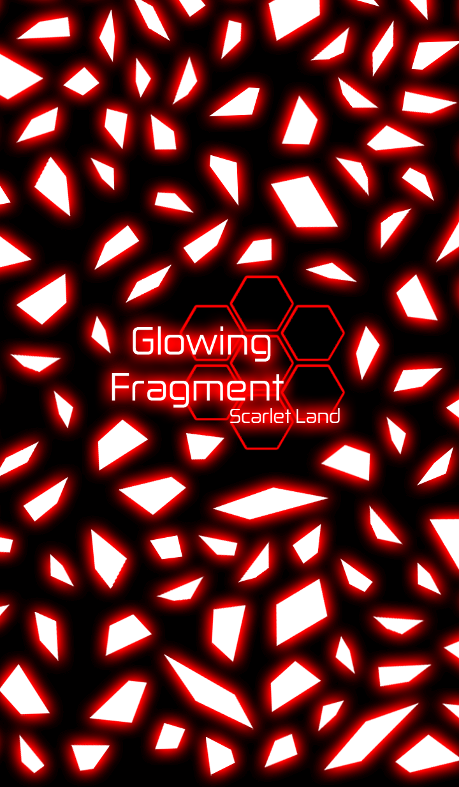
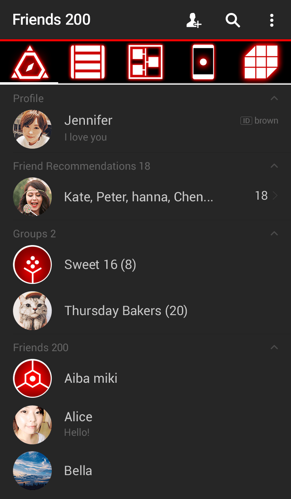
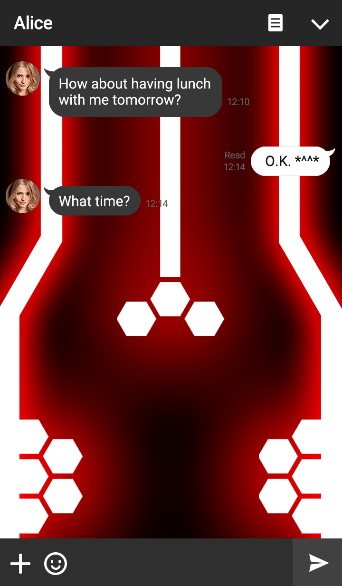
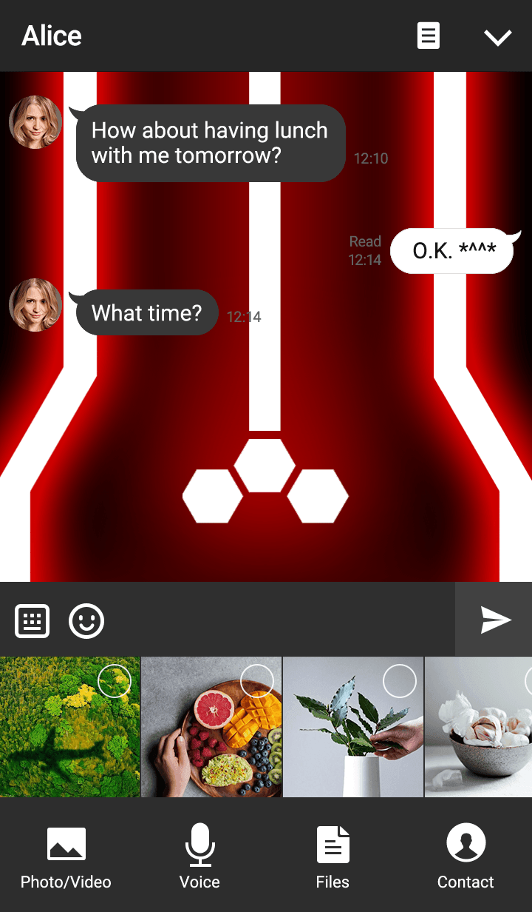
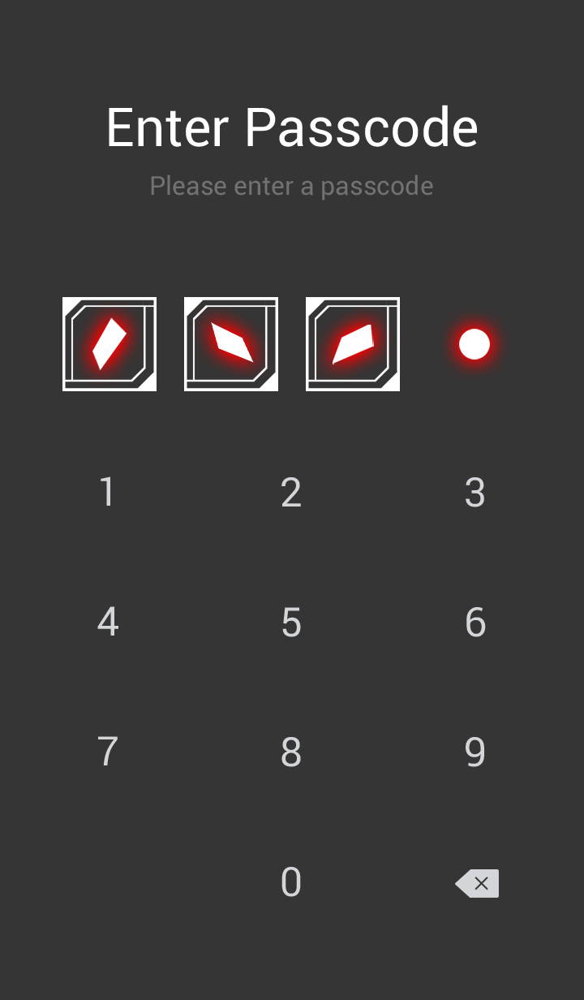
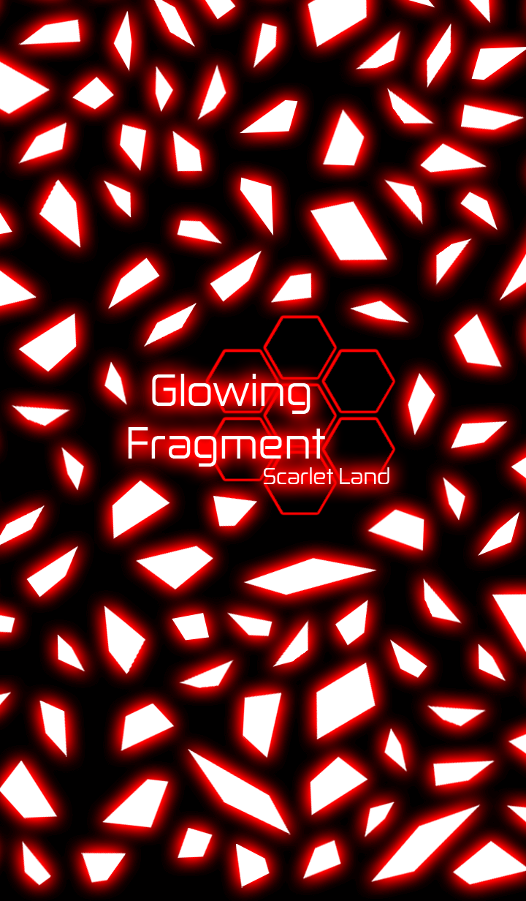
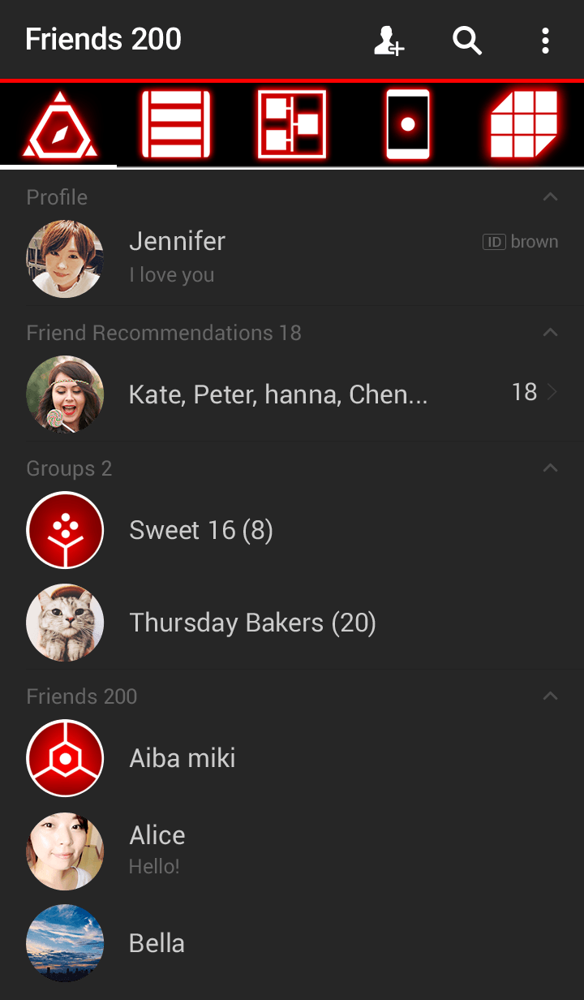
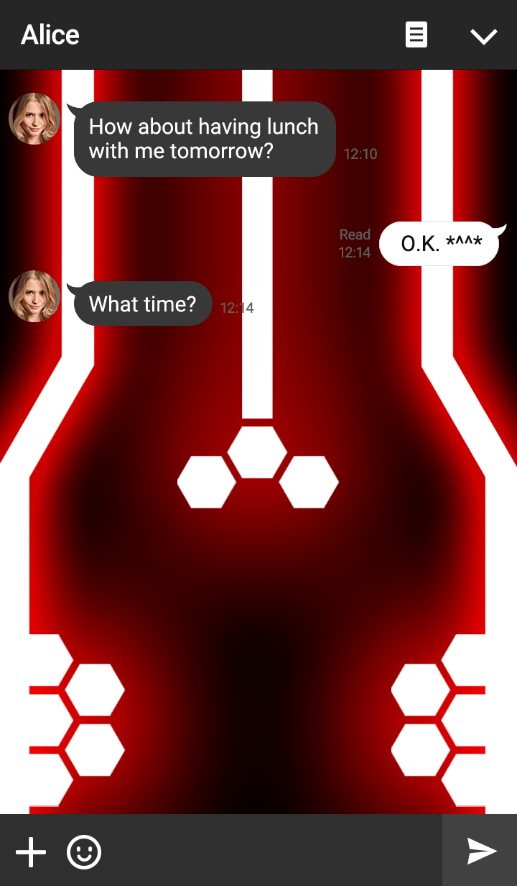
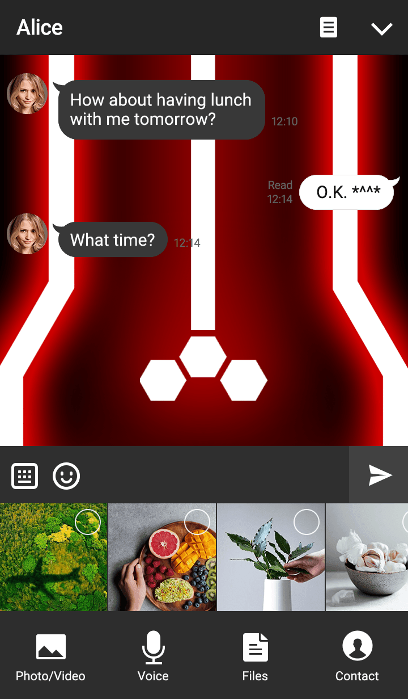
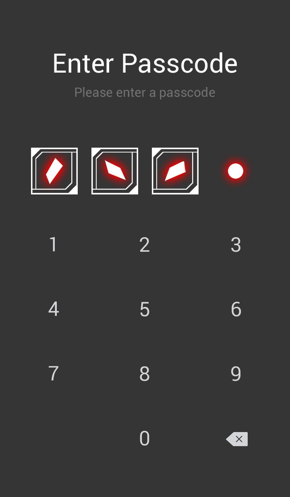

Yusatsu Nao's Blog
Saturday, July 22, 2017
Glowing Fragment Scarlet Land LINE THEME Released
Posted by Yusatsu Nao
Hello guys, welcome to my site, today I release my fifth LINE Theme, I hope next I can make more LINE Theme and of course LINE Sticker, but first I need to finish my real life problem, after that I can make more theme and new sticker for you guys. For today, I release this new Line Theme, well not new, just a bit modification. Check it out...
THEME TITLE : Glowing Fragment Scarlet Land
    
    
If you want to buy it you can check the link below
Click here
The red color, so good, if you like it please buy it. I will create more LINE Theme soon, and about Anime Icon Summer Pack I will release it soon, maybe end of July or beginning of august, please wait for it. Thank you very much.
Okay guys, Thanks for visiting my site, see this post, I hope you like it. And don't forget to like my Facebook, Follow my twitter, and my LINE@ Account. If you have a question about my works or say hi you can send message through my Facebook Page, Twitter DM, or chat my LINE@ Account. See you next time guys, have a great time.